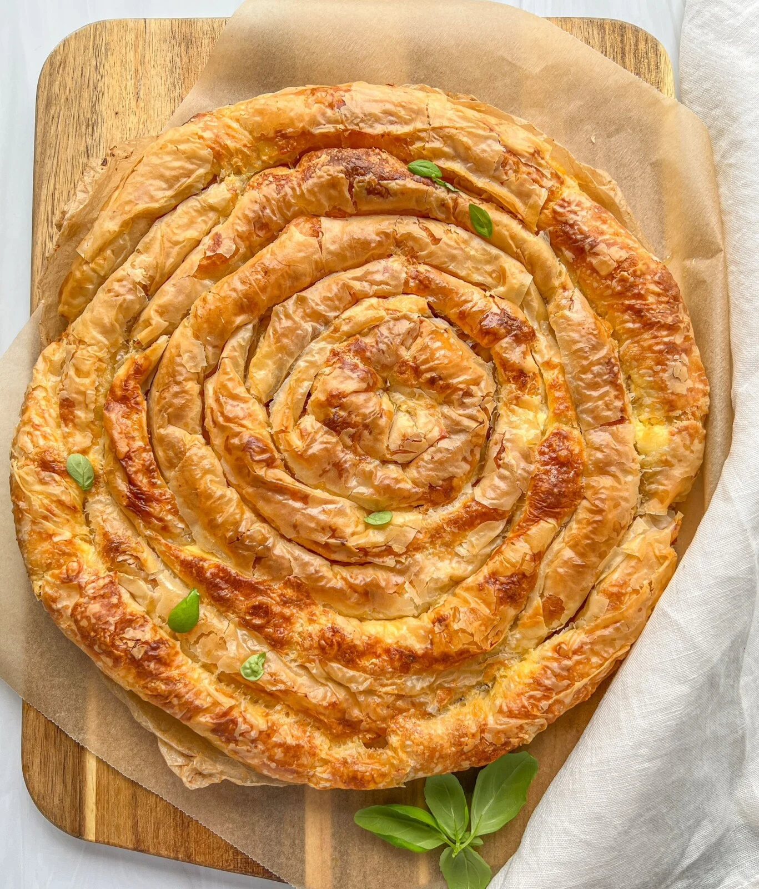

Banitsa
Home

Description
Banitsa is a traditional Bulgarian pastry made with layers of filo dough filled with a mixture of eggs and white cheese. It's crispy, cheesy, and often enjoyed for breakfast or festive occasions.
Ingredients
1 pack of filo dough (400–500 g)
300 g Bulgarian white cheese (or feta)
4 eggs
1/2 cup yogurt
1/4 cup sunflower or vegetable oil
1/2 teaspoon baking soda
Butter or oil for greasing
Steps
- Preheat oven to 180°C(350°F)
- In a bowl, crumble the cheese and mix with eggs,yogurt, oil, and baking soda
- Lightly grease a baking dish
- Layer 2-3 sheets of filo dough, brushing each with oil
- Spread some of the cheese mixture over the dough
- Repeat layering and filling until all ingredients are used.Finish with a few plain sheets on top.
- Optional: Score into squares before baking.
- Bake for 30-40 minutes or until golden brown.
- Let cool slightly and server warm or at room temperature.